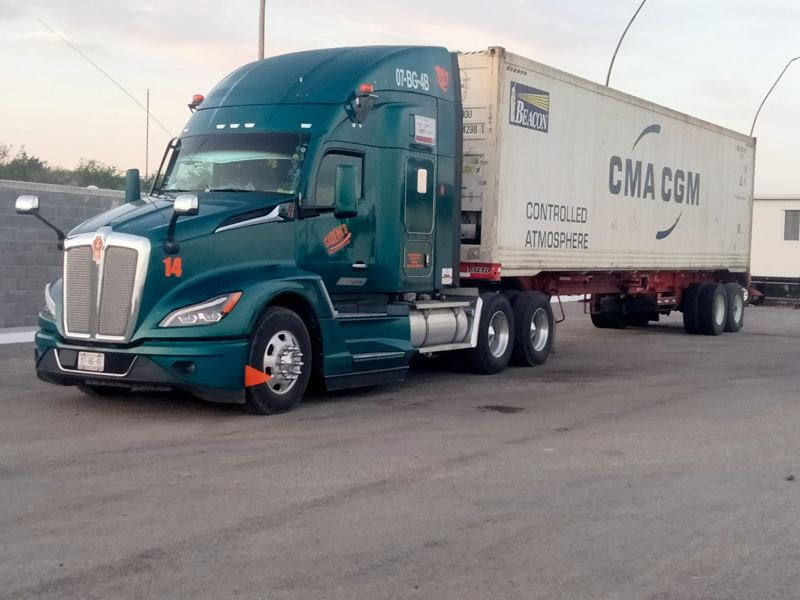
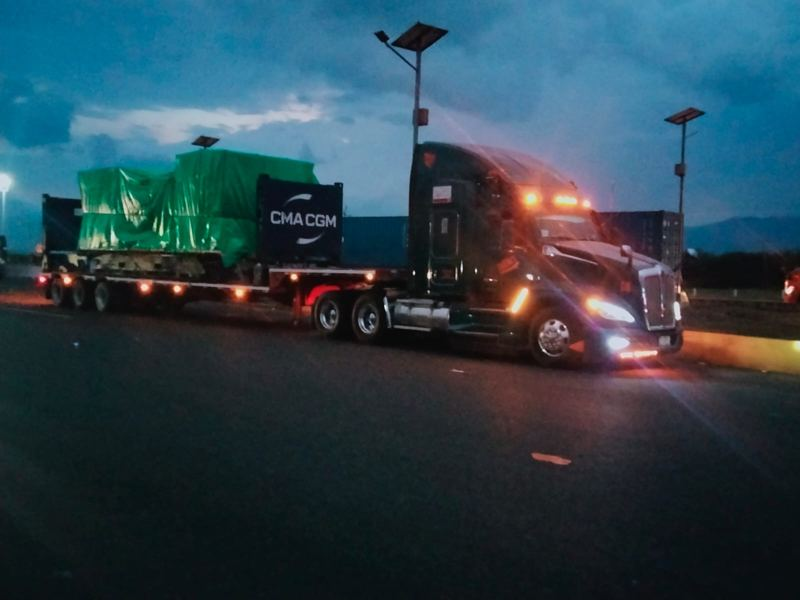
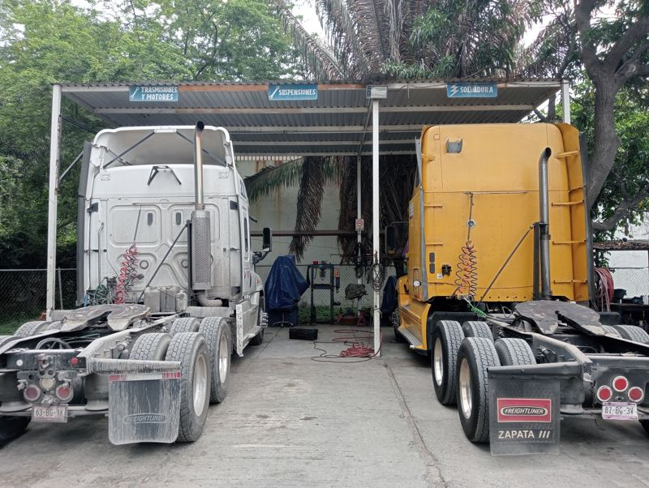
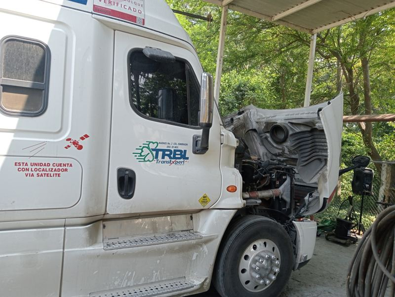
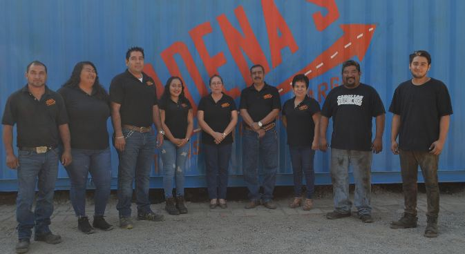

Transporte local
Envíos dentro del estado de Colima, principalmente desde el puerto de Manzanillo hacia diversos puntos del estado.
Transporte de contenedores desde el puerto de Manzanillo a todo México, taller especializado y refaccionaria abierta hasta las 9 PM. Todo en un mismo lugar.
Cotiza ahora →


Unidades de modelo reciente en excelentes condiciones mecánicas y operadores capacitados para cumplir nuestro compromiso contigo.

Envíos dentro del estado de Colima, principalmente desde el puerto de Manzanillo hacia diversos puntos del estado.

Cobertura nacional bajo solicitud del cliente, con contenedores de todos los tamaños y rastreo GPS.
Rastreo en tiempo real y monitoreo constante para máxima seguridad.
Refrigerados, estándar y carga especializada.
Protocolos de seguridad reforzada y personal capacitado.
Especialistas en mantenimiento y reparación de tractocamiones. Elige lo que necesita tu unidad y agenda por WhatsApp.

Tu camión no se queda parado por falta de refacción. Arma tu lista y pregunta precio y existencia en un solo mensaje.


Somos tu aliado confiable, hasta el último minuto.
No está en el catálogo, pero pregúntanos: es muy probable que la tengamos.
Transportes de Carga Cadena's es una empresa mexicana con más de siete años de experiencia en el transporte de mercancía por todo el territorio nacional.
Desde 2016 estamos comprometidos en brindar servicios logísticos de excelencia: puntualidad, confiabilidad, unidades nuevas con rastreo satelital y mejora continua basada en nuestro sistema de gestión de calidad.
Nos diferenciamos al hacer del transporte de tus mercancías nuestra prioridad y renovar permanentemente nuestra flota.

Ofrecer servicios especializados de transporte terrestre con altos estándares de calidad y seguridad, fomentando la mejora continua y el desarrollo de colaboradores, clientes, socios, proveedores y la sociedad.
Ser una empresa líder nacional en servicios de transporte terrestre, anticipándonos a las necesidades de nuestros clientes para superar sus expectativas y los estándares del mercado.